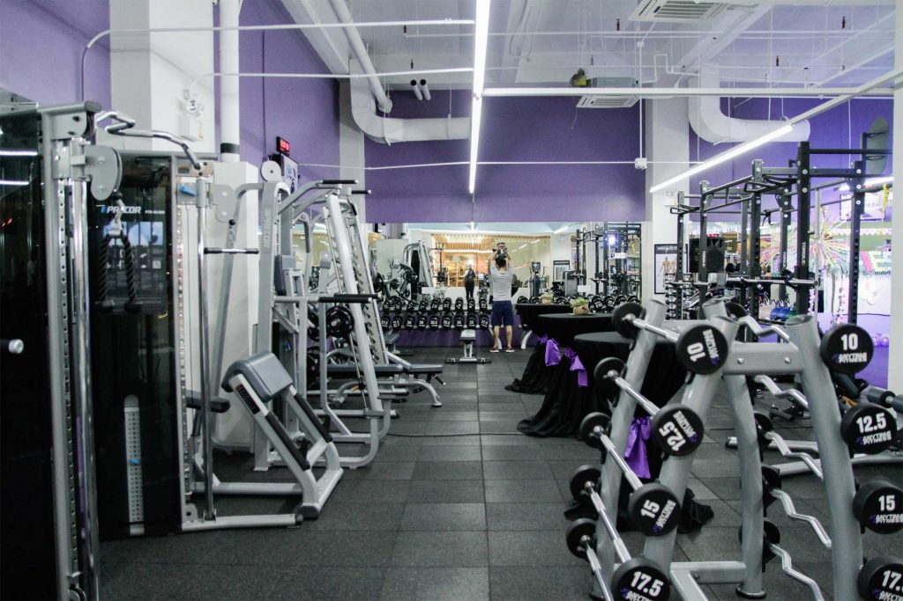
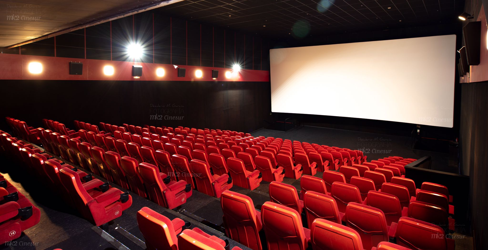

Aficciones
DeporteEn mi tiempo libre me gusta hacer deporte, el principal deporte que hago es ir al gimnasio. Aun así me gusta realizar otros deportes como el fútbol, baloncesto, voleibol, natación y boxeo. |
 |
OcioSoy una persona que pasa mucho tiempo casa jugando videojuegos online u offline,viendo series, sobre todo del género anime. A pesar de eso me gusta salir cuando es acompañado de amigos o pareja, el cine y los centros comerciales me entretienen mucho. |
 |